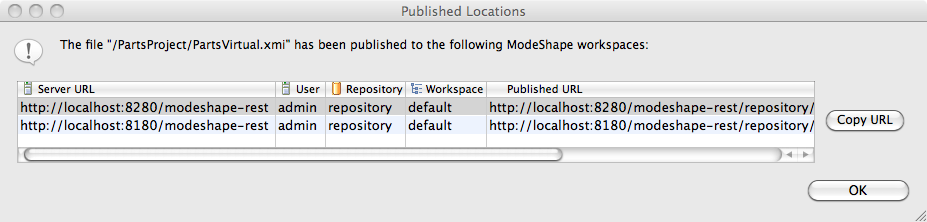

The Published Locations Dialog identifies all the ModeShape workspaces the selected file has been published to from this Eclipse workspace.
Here is what the Published Locations Dialog looks like:
The table data identifies, for each workspace, the server URL, user, repository name, workspace name, and published URL. A button to copy the published URL of the selected row to the system clipboard is also available.